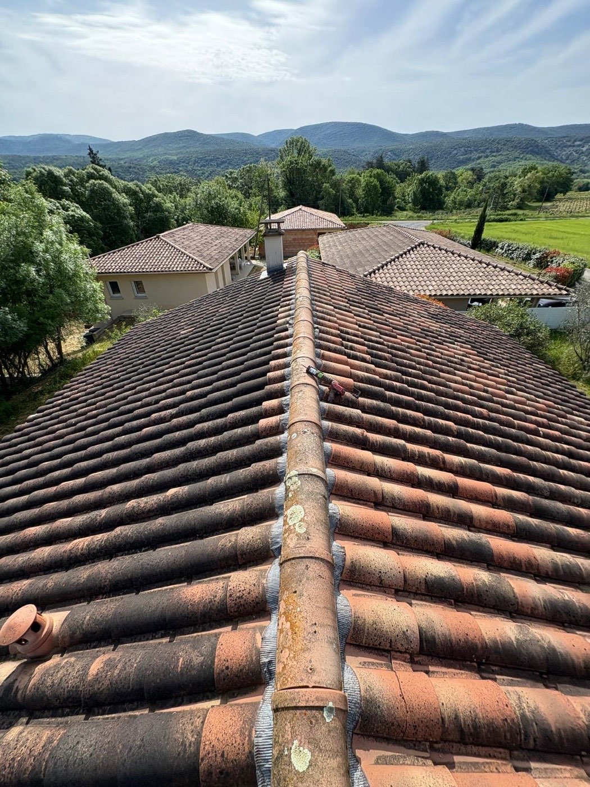

Nos réalisations
Nos chantiers en Ardèche
Rénovation de toiture, charpente neuve, isolation en sarking, dépose, faîtage et réfection complète. Toutes ces photos sont des chantiers réellement menés par Debord Rénovation, dans nos villages et nos vallées d’Ardèche.
Rénovation de toiture



Sarking


Charpente


Avant / après

Accès difficile

Un projet de toiture ?
Diagnostic et devis gratuits, dans toute l’Ardèche et les communes limitrophes.